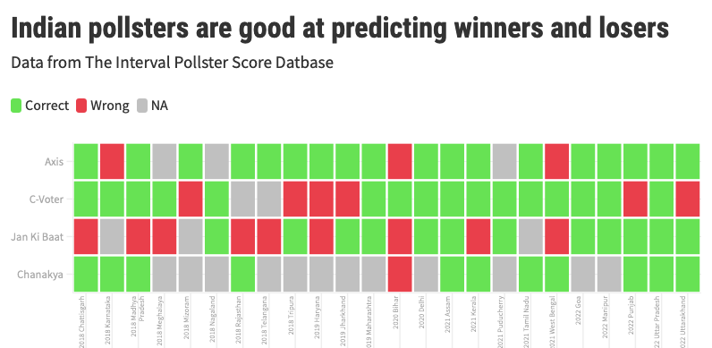
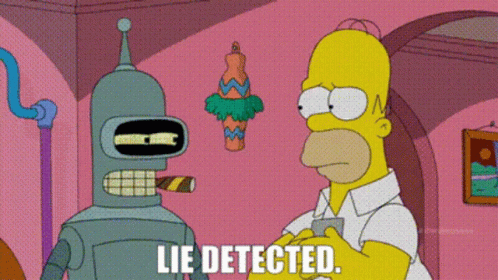
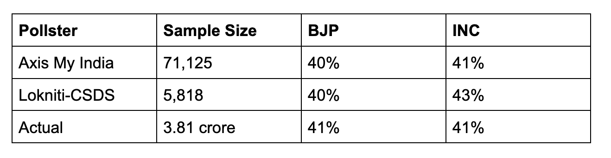
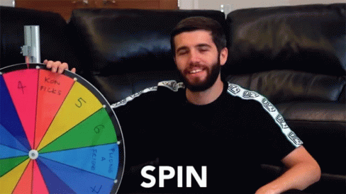
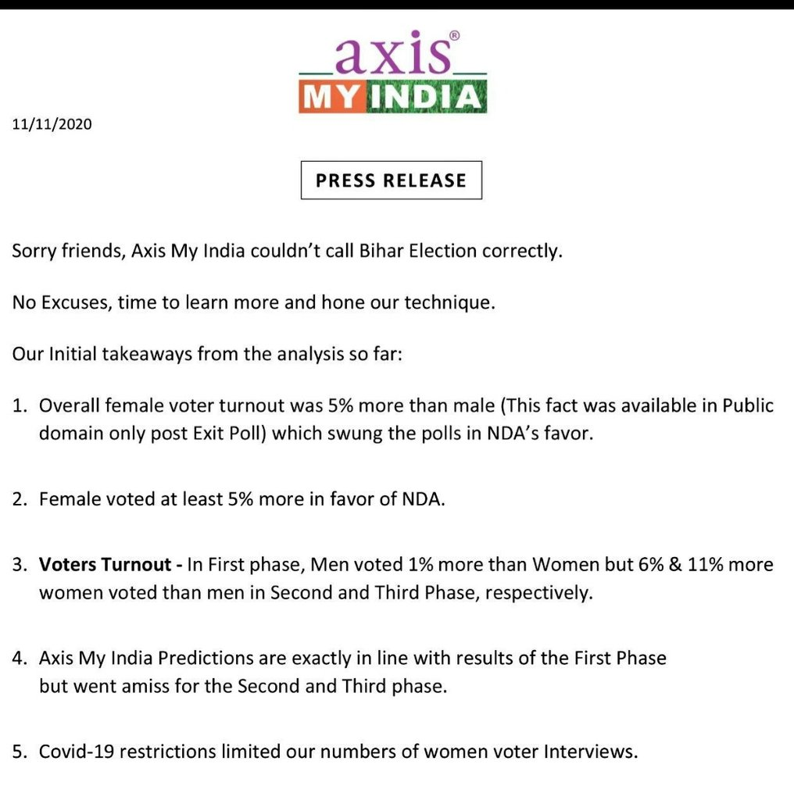
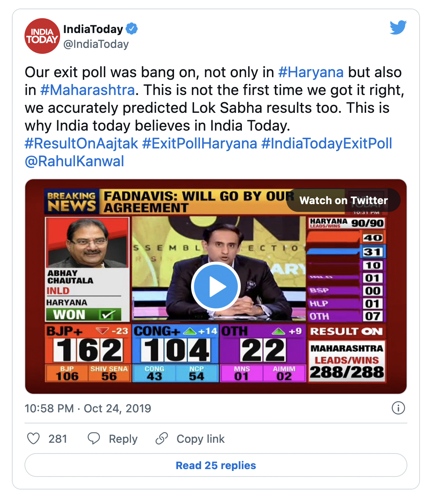
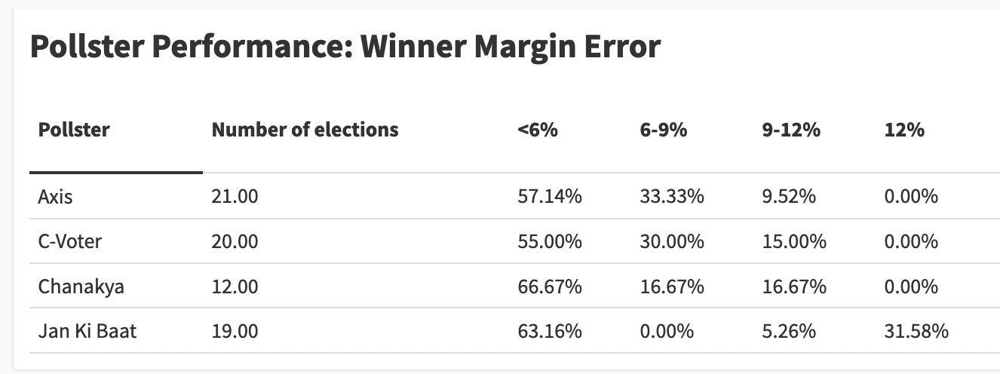
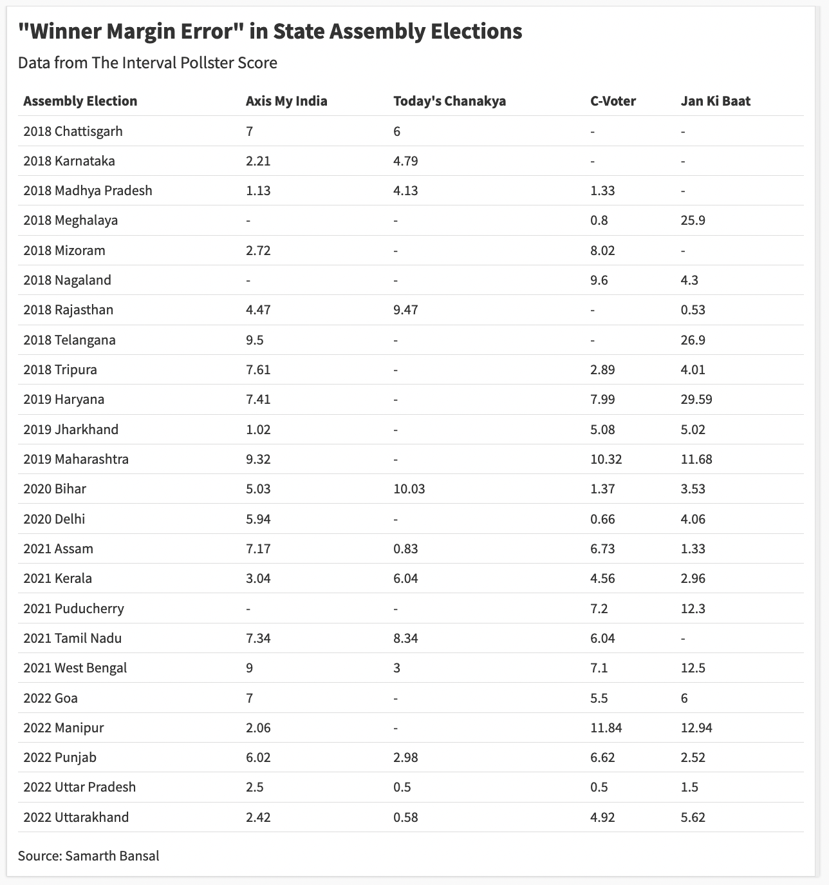

Indian pollsters are doing fine. Here is how forecasts work.
| 27 march, 2022Illustration by @somethingsketchy
This story was originally published in my fortnightly deep-dive newsletter, The Interval. You can read more about it here.
Brief: Why do we have election polls at all? How does a polling company craft and execute an accurate survey? Why do some succeed while others fail? Also: how do we define ‘accuracy’? The answers to these common-sense questions may surprise you. It’s a 15-minute read.
Election forecasting is an utterly useless exercise.
What is the point of predicting an election a few days in advance? It makes news, it’s entertaining, it bumps up television ratings. What public purpose does it serve? None.
What’s more frustrating? They are often wrong. Every pollster told us that Vajpayee would return to power in 2004. He didn’t. The British would vote ‘remain’ in the Brexit referendum. They left. Hillary was supposed to defeat Trump. She lost.
“We have no effective means to gauge public opinion,” I wrote on Facebook the day Trump won. “Polls suck!”
This is what I thought five years ago.
Not anymore.
After researching the history of election forecasting, revisiting the fundamentals of statistics to understand the power and limitations of surveys, analysing data on the historical performance of Indian pollsters, and a two-month stint in 2019 at a news organisation to get an insidery look at the media-pollster machinery, I landed on the opposite conclusion: polls don’t suck.
Good polling is essential for our democracy, forecasting serves a specific purpose, and projections are not that wrong.
Just look at data from exit polls. India’s leading pollsters mostly get the winner right.

Axis My India correctly called 18 of the 21 state elections in the last four years. Today’s Chanakya got 11 on 12. These two were also spot-on with seat projections for the 2019 election. Great stuff. These numbers come from a dataset I have collected. (More on that later.)
C-Voter does okay-ish: 16 of 22 predictions were accurate but they faltered on six occasions. Jan Ki Baat is the worst in this lot: 9 of its 21 calls were wrong — not much better than a dart-throwing chimp.
But the media ignores historical performance.
Pollsters with a solid track record are clubbed with fly-by-night—and plausibly fraudulent—operators with dubious methodologies, as if all of them form one homogenous group. The four I picked are routinely visible on Indian television but then new ones appear in every election. So if you lump ten different projections of varying quality in a single “polls of polls” graphic, chaos is guaranteed. Some will get it right and some will be wrong. Forecasts will look like guesswork. It is not.
First, why should you care about polls?
My arguments will have no meaning for you unless we agree on the purpose of polling and forecasting. Again: What exactly is the point of predicting an election a few days in advance? At the heart of this question lies another epistemic puzzle: How do we make sense of Indian elections? Why do people vote the way they do?
Here is what I think: Deeply reported stories—however accurate—only show us part of the picture. We need credible, high-quality data to capture the bigger trends. Otherwise, we are at the mercy of talking heads and their various pet theories, often backed by very little evidence other than their skewed interpretation. We often see what we are already primed to see. Data—if deployed and assessed properly—helps correct and expand our vision.
Data from Indian pollsters have revealed some significant shifts in Indian politics over the last few years. For example, in the recent state assembly elections, more women voted for the BJP than men in all four states the party won. This is a big turnaround: the BJP had a gender disadvantage with women before 2014. Polling data shows they closed it at the national level in 2019. And it’s now happening in state elections.
Ground reporting can help us figure out why this is happening and its implications for upcoming campaigns, but we would not know the scale of these shifts without survey data.
But surveys have one big problem: human beings are liars. We lie to our family, friends and colleagues. We lie to ourselves. And we lie to pollsters. People over-report how much sex they are having and under-report the number of cigarettes they are smoking. They pretend to have voted in elections and cheat on the calories they are consuming.

So why should we trust data on electoral preferences? Do people have any incentive to reveal the truth? And what if the survey was done badly?
And that is precisely why election forecast matters: it proves or disproves the accuracy of a survey. A pollster’s prediction confronts the moment of truth on result day. A real test.
In short, forecast matters for an accuracy check. Even high-stakes data like unemployment figures don’t have this privilege. We just have to accept the number surveys project, and if two surveys produce varying estimates, it’s hard to know which one is right. This is why I care about polls and forecasts.
What we need is a recalibration of our expectations from polls. The inexact and imperfect science of sample surveys can’t produce the precision we often demand. Understanding how pollsters forecast elections and identifying the sources of error and uncertainty baked in the process is the first step in building a better mental model for analysing the accuracy of forecasts. That’s what I will do today.
I will also introduce The Interval Pollster Score (TIPS), my new data project to assess the performance of Indian pollsters with an objective metric.
How to forecast elections
The fundamental premise of a survey is based on a simple but counterintuitive idea: responses of a small set of poll-takers (“sample”) can reflect the views of a large population, provided they are randomly selected (to avoid bias) and represent the underlying population (to generalise).
George Gallup, the pioneer of sample surveys and public opinion measurement, explained it this way: “If you have cooked a large pan of soup, you do not need to eat it all to find out if it needs more seasoning. You can just taste a spoonful, provided you have given it a good stir.” The idea of “stirring” is the crucial bit and makes all the difference between a good and a bad poll. It’s not trivial.
Let’s say you are a pollster surveying Uttar Pradesh. You want to do a post-poll where you go to people’s houses after the election is done. You will need to make three crucial decisions.
One: the size of the sample
Say you are polling in just one constituency with 15 lakh voters. How many people should you interview?
The exact figure will depend on how close you think the election is going to be and the level of precision and confidence you want in your estimate. But in most cases, a sample in the 1,000 to 1,500 range is good enough.
That’s less than 0.1% of the constituency’s population. Isn’t that too small? It is, but the math says it is enough.
What if you want to poll in a second constituency with 30 lakh voters? Should the sample size be doubled? No. It remains the same. 1,500 respondents. What about 60 lakh voters? Again, no change. 1,500 still works.
This is another statistical result that may be hard to grasp: a bigger constituency (or any region) does not need a bigger sample for the same level of accuracy. After a point, the size of the population doesn’t matter in deciding the sample size.

So does that mean interviewing 1,500 people is also enough for a national survey?
Technically speaking, yes. If you want to know, for example, the percentage of Indians who are for or against the government’s farm laws, polling 1,500 people in a well-designed survey is fine.
But that will only give you a national estimate. That sample size is not enough for a sub-national breakup. If you divide India into four regions (North, East, West, South) and want estimates for each one, you need to poll 1,500 respondents in each region. So the sample size becomes 1,500 times four: 6,000.
If you want an estimate for every state? 1,500 respondents multiplied by ~30: 45,000 respondents. These are rough numbers.
Last example to explain sample size calculations. Axis My India polled around 8 lakh people for its 2019 forecast. Where did that number come from? In an unprecedented move, Axis polled on each of the 543 Lok Sabha seats: 1500 times 543 and you get a number around 8 lakh.
In the 2018 Madhya Pradesh election, the BJP and Congress both got around 41% votes. Axis and CSDS both got vote shares right within an acceptable error range (more on that below), even though the Axis sample was twelve times bigger.

Having a large sample obviously helps. Your accuracy will improve. You can estimate how specific demographic groups voted with more precision. That is a pollster’s call and depends on multiple factors, most importantly money.
And there are trade-offs: Do you ask five questions to one lakh people (which gives you more precision and diversity) or 50 questions to 10,000 people (which will generate more meaningful data)?
The most important thing to remember: just having a large sample size is not enough. The method of choosing the sample is what matters. That’s your second key decision.
Two: choosing the sample
Uttar Pradesh has 403 assembly seats and you want to pick a random sample with 20,000 respondents.
Here is one way to do it. Assign a number to all seats. Then use a computer program to randomly pick a list of 100 numbers from 1 to 403. These are your selected seats. Now in each sampled seat, randomly pick five polling stations. And within each polling station, you pick 50 voters at random using data from official electoral rolls (which gives the name and address of every registered voter).

This will give you a list of 25,000 people. Send your surveyors to voters’ homes for face-to-face interviews. Some won’t be around and some may just refuse. You expect an 80% coverage. That gives you a sample of 20,000.
But so many things can go wrong at the execution stage. You need to have a trained workforce who know the right way to approach and talk to people. You need to have some quality control checks: what if the surveyor is making things up? Your questionnaire matters: how you phrase the questions and what you ask may change their answers (they can lie, too!). All pollsters have their own ideas about what gets them a good response.
Third: ensuring representativeness
Your fieldwork is complete and data is sitting on your computer. Now you want to estimate vote shares for each political party.
You start your analysis and look at the gender break-up in your data.
In the ideal case, it should be a 50-50 split. That’s the advantage of random sampling. It will highly likely generate a sample that is similar to the state population in terms of key demographics: gender, age, geography (rural/urban), education, caste, income, among others.
Think about it. Consider a box with 1000 slips, 500 red and 500 green. You randomly pick 100. How many green and red slips do you expect in your selection? It won’t be exactly 50:50, but it will be close to 50:50. It could be 54:46, for example. That’s fine. A random sample leads to a close-enough representative sample.
But you find 70% men and 30% women in the data. You call your field staff and learn that more women refused to speak to surveyors than men.
Is the data quality necessarily bad? No. It’s not ideal, but you expect these things. And you can fix this by a process called ‘weighting’: assign more weight to responses of the 30% women in the final result to make it equivalent to the 50%.
For example: In the 2019 Jharkhand election, Axis My India had a sample size of around 12,500 people with 76% men and 24% women. That’s quite skewed.
But their vote share estimates based on weighted adjustments were exactly right. Axis had projected 34% for BJP (it got 33.3%) and 37% for JMM+ (it got 35.3%). The method works.
This may not always work and understanding the sources of error at this stage is crucial to understand what can go wrong with even excellently-designed and excellently-executed polls.
Problem #1: Non-respondents are systematically different from respondents
When you are weighting the data to account for imbalance, you are making a key assumption: people who did not respond to the survey (or were not available at the time of the survey) are largely similar to the ones who did respond. There is no major difference between these two groups.
But this may not always be true. For example, your skewed sample of women may be dominated by the upper-caste because Dalit women didn’t want to speak for some reason. If their voting preferences don’t align, adjusting the weights will show less support for the party Dalit women were backing.
Data from Indian pollsters show that the non-response rate is not a big problem in India. The refusal rate for face-to-face interviews is quite low. Axis My India has a refusal rate of less than 5%. Lokniti-CSDS also reports a single-digit refusal rate.
Compare that to the US where the refusal rate in phone surveys (popular method there) is now above 90%. It’s huge. That is a key explanation for the problems with American polling.
That’s also one reason we should not blindly compare polling performances in India and the US. We have different challenges.
Axis My India faced the non-response problem in the West Bengal election where their forecast was wrong: they significantly underestimated support for the Trinamool Congress (TMC).
What happened? The non-response rate in Bengal—a state riddled with incidents of political violence—was unusually high at around 20%. And Axis made an assumption that the voters who did not speak would be equally split between the BJP and TMC.
This assumption was wrong: non-respondents had a much higher proportion of TMC voters. It’s always hard to exactly pinpoint why a poll got it wrong, but this is the company’s official explanation.
Problem #2: What demographic factors to account for?
So far, I just restricted the sample representativeness discussion to gender. But as a pollster, you need to account for other demographics as well. That is your call based on what you think affects people’s voting preferences.
In Uttar Pradesh, for example, you can’t ignore religion and caste. The majority of Jatav Dalits vote for the BSP and the majority of Yadavs vote for the SP. The BJP has re-engineered social coalitions to attract non-Jatav Dalits and non-Yadav OBCs. Caste matters and the sample should reflect that.
You may also want to look at age and education. But you can’t control for each and every factor because the sample size may not be large enough to make such granular adjustments. You need to decide what matters the most and what’s statistically permissible.
This is why a good forecast is not based on statistics alone. It needs an informed process to weigh the information and make judgement calls rooted in ground reality.
Problem #3: Turnout modelling
The last step is projecting turnout. This is a bit tricky: when you planned the survey and collected the sample, your base was all voters of Uttar Pradesh. But everyone doesn’t vote. If the voter turnout is 60%, you need to think about who came out to vote and who didn’t — and factor that in your projection.
Axis, for example, estimates expected turnout figures based on historical data released by the Election Commission of India. For UP 2022, they would look at turnout trends from UP 2017 and use that as their base.
If the latest turnout reported is lower than the base figure, Axis assumes that people from the general and OBC community turned out less, and they reduce their weight in the final calculation. That’s their theory. Other pollsters have their own ways.
Axis got the Bihar projection wrong because of their turnout model. See this.

After adjusting for all these factors and running your models, you end up with vote share estimates.
To recap: this whole process from collecting raw data to arriving at vote shares is non-trivial and errors can occur at every stage. Random sampling could be ineffective; people may not report their true preference; surveyors may do a bad job; they may enter fake data; the sample may systematically miss out key demographics; turnout projections could be wrong.
This is why forecast estimates can never be precise. The job of a pollster is to understand these sources of error and find ways to reduce them, but you can’t eliminate them.
Good pollsters report vote share numbers with a ‘margin of error’. Usually, but not always, most keep it at around 3%. That means if you say a party will get 40% votes, the actual number could be anything from 37% to 43%.
You can afford a slightly larger error in a market research survey. It won’t make a big difference if a company survey finds that 80% like their shampoo or 72% do. But that big of a difference can turn around the election.
So if a party gets 40% votes and the forecast shows 43%, the poll is right. If it’s 44%, it’s a bit off. If it’s 50%, the poll is totally off–even if it got the actual outcome right.
This is one of our many mistakes in dealing with polls. Getting the winner right is not a good way to assess a forecast.
Pollsters and their media partners will obviously use this simplistic measure for marketing but we should ignore it. (I still mention it because public backlash often follows a wrong call: Trump, Brexit, Vajpayee are just that — so it’s only fair to set the record straight on that front!)
For example, Axis My India was lauded for being the only one to call the Maharashtra state election right. While most pollsters projected more than a two-thirds majority for the BJP-Sena alliance, Axis had the most conservative estimate, closest to what actually happened.

Know what? Despite getting the trend right, it was not a good poll—at least not in my view. The poll underestimated NDA’s vote share by around eight percentage points — that’s quite off, way beyond the acceptable margin of error.
How many seats?
Going from votes to seats is a whole different game. There is no survey science involved in this step. Mathematical models enter the scene. There is no right way. It is very tricky, thanks to our first-past-the-post electoral system. We have elections where the party with a lesser overall vote share gets a higher number of seats and wins the election.
Every pollster has their own method, and most don’t reveal what they do. What we do know is that seat forecasting models further amplify the uncertainty.
There are cases where a pollster’s seat projections were totally off but vote shares were in line with actual results. That’s a good poll. And there are cases where seat projections turn out right even when vote projections are off — that’s because multiple errors might be cancelling out each other. That’s not a good poll. The pollster just got lucky.
We don’t make this distinction in popular discourse because seat count is what everyone is interested in. Polling discussions start and end there. And they are wrong, more often than not. The data shows that. No wonder we think most polls are wrong and people distrust polling. But that’s not a good way to judge a forecast.
Pollster Performance
At the moment, The Interval Pollster Score, or TIPS, has data on around 170 state-level forecasts made by leading Indian pollsters over the last four years, including the 2019 general election and 24 state assembly elections.
It has whatever I could put together from news articles, YouTube videos (of exit poll telecasts), pollster websites and Wikipedia. (There might be errors and I will fix them when brought to my notice.)
Here is my framework. The goal of forecasting is to offer us an accurate window into voter behaviour. The actual results, in turn, offer an accuracy check of the underlying data. If we care about is the survey quality–which in turn is measured by its ability to estimate vote share, not seats. So that’s the metric I use for assessing the quality of a poll.
To simplify this task, I calculate the “winning margin error”: the actual difference between the vote share of the two leading parties (actual margin) and the projected difference (projected margin) in the poll. This metric is not perfect but it works in most cases and makes life easy by boiling down the poll performance metric to a single number.
For example, say the poll estimates 45% vote for the BJP and 38% for the Congress. The projected margin is 7%.
But the result shows 47% for BJP and 37% for Congress. So the actual margin is 10%.
The “winning margin error” is the difference between the two: 3%, in this case. If a poll gets the “winning margin error” under 6%, I classify it as a good poll.
6% is based on the assumption that individual vote estimates of a party will come with a 3% margin of error — so we double it because we are looking at two the difference of two estimates.
A winning error margin between 6 to 9% is not great, but it’s not way off. Data from a poll with a 9%+ winning margin error is just bad. Anything above 12% is junk.
How do Indian pollsters fare on this scale?

If you take all pollsters collectively, 43 of the 72 projections (around 60%) had the winning error margin within the 6% range. Given everything that can go wrong with surveys, I am quite impressed with this performance number.
Jan Ki Baat is an outlier among the four because one in three of their polls were completely junk with a winning error margin crossing 12%. Other pollsters don’t even have one forecast in that category. There appears to be something systematically wrong with JKB’s methodology, so we should not club it with the rest.
Now take a slightly lenient metric: 87% of the projections made by the other three Indian pollsters fall under the <9% category.
I am not going to laud a pollster for an 8% winning margin error, it’s not good, and so there is a lot of scope for improvement. But even a mediocre performance in that range shows the application of scientific methods. This isn’t a problem of quackery.

I will stop here today. I will share more analysis of state-specific predictions on my blog. I will link to it in future issues. I am also thinking of a composite score that accounts for the seat count number to align the score with public expectations.
A parting note: What worries me
I will end with what worries me about the Indian polling ecosystem.
The problem is not that the polls are often wrong. The problem is not that polls can’t be trusted. The problem is that the polls are not bringing us enough data to understand voter behaviour—the very reason why they are critical to democracy and to understanding the state of the nation.
Election polls do not pay the bills of polling firms, whose bread and butter is market research. But political polling brings publicity and brand awareness—and the opportunity to have your name on prime-time TV.
But the television channels, which pay for these polls, are obsessed with only seat projections and calling the final winner. As a result, these poll questionnaires are so thin that we hardly learn anything of value—just big numbers slotted under catch-all categories like Dalit or OBC etc. It may tell us the big trends but nothing about what is happening on the ground, where reality often defies these kinds of catch-all categories. And even if we know ‘what’ happened, we almost never understand ‘why’.
If media companies were less focused on “beating” their rivals—and boasting about ‘sample size’—they would invest in detailed data from smaller, more representative and accurate samples. These polls would do a far better job of capturing what is actually happening on the ground.
Until then, they may call on the right winner and win brownie points from political junkies, but their work won’t be of much help. It will remain useless.
Correction: Jan Ki Baat got the winner right in the 2022 Uttarakhand election but was incorrectly marked red in the first chart of the story. The chart has been updated to reflect the change. I regret making the error.
Clarification*: The analysis in this story is based only on data from exit polls and post-polls — numbers that are shared after voting has ended. It does not include pre-election opinion polls or any other form of polling.